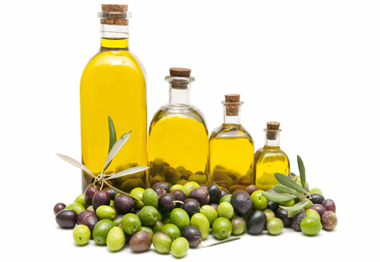

 অলিভ অয়েলের উপকারীতা
অলিভ অয়েলের পরিচিতি
পবিত্র কুরআনে আল্লাহ রাব্বুল আলামীন অলিভ অয়েল বা যইতুন তেল সম্পর্কে বলেন,
আল্লাহ আসমানসমূহ ও যমীনের নূর। তাঁর নূরের উপমা একটি তাকের মতই। তাতে রয়েছে একটি
প্রদীপ, প্রদীপটি রয়েছে একটি চিমনির মধ্যে। চিমনিটি উজ্জ্বল তারকার মতই। প্রদীপটি
বরকতময় যাইতূন গাছের তেল দ্বারা জ্বালানো হয়, যা পূর্ব দিকেরও নয় এবং পশ্চিম দিকেরও
নয়। এর তেল যেন আলো বিকিরণ করে, যদিও তাতে আগুন স্পর্শ না করে। নূরের উপর নূর।
আল্লাহ যাকে ইচ্ছা হিদায়াত করেন তাঁর নূরের দিকে। আর আল্লাহ মানুষের জন্য উপমাসমূহ
উপস্থাপন করেন। আর আল্লাহ প্রতিটি বস্তু সম্পর্কে সম্যক জ্ঞাত। (সূরা আন নূর, আয়াত
৩৫)
সূরা আত তীনে মহান প্রতিপালক আল্লাহ যইতুনের শপথ করেছেন, বলেছেন,
শপথ তীন ও যইতুনের। (৯৫: ১)
হাদীসে একাধিক বর্ণনায় এসেছে যে রাসূলুল্লাহ সা. বলেছেন,
তোমরা যইতুনের তেল খাও ও তা শরীরে মাখ। কারণ এটা বরকতময় বৃক্ষ থেকে উৎসারিত।
অলিভ অয়েলের রয়েছে হরেক গুণ। ঐতিহাসিকভাবে এটি শান্তি ও সৌহার্দ্যের প্রতীক।
ভূমধ্যসাগরীয় অঞ্চলে স্বাস্থ্যসম্মত খাদ্য হিসাবেও এর কদর আছে। এসব ছাড়াও স্বাস্থ্য
পরিচর্যা, ঘর- গৃহস্থালীর জিনিসপত্র পরিষ্কার করার কাজে ব্যবহৃত হয়ে থাকে অলিভ
অয়েল।অলিভ অয়েলে রয়েছে উপকারী কলেস্টেরাল এইচডিএল (হাই ডেনসিটি লাইপ্রোটিন)। যা পরিপাক
প্রক্রিয়ায়-সহায়ক ভূমিকা রাখে। গলস্টোন ও আলসার প্রতিরোধের পাশাপাশি-পুষ্টির যোগান দেয়।
এন্টিঅক্সিডেন্ট উপাদান থাকায় কাজ করে ক্যান্সার প্রতিরোধক হিসাবে।
অলিভ অয়েলের গুনাগুন
কোষ্ঠকাঠিন্য রোধে: প্রতিদিন সকালে খালি পেটে ১ টেবিল চামচ অলিভ অয়েল খেয়ে নিন।
কয়েকদিনের মধ্যেই কোষ্ঠকাঠিন্যের সমস্যা থেকে রেহাই পাবেন।
চোখের যত্নে: নিয়মিত চোখের পাপড়ি ও ভ্রুতে অলিভ অয়েল লাগান। দেখুন আপনার চোখের
সৌন্দর্য কতোখানি বেড়ে গেছে।
ঠোঁটের রুক্ষতা দূর করতে: সূর্যের ক্ষতিকর প্রভাব থেকে ঠোঁটের কোমলভাব রক্ষা করতে
নিয়মিত অলিভ অয়েল লাগান।
ব্রণ প্রতিরোধক: ৪ টেবিল চামচ লবণের সঙ্গে ৩ টেবিল চামচ অলিভ অয়েল মিশিয়ে পেস্ট তৈরি
করুন। তারপর সেই পেস্ট ২ মিনিট ধরে মুখে ম্যাসাজ করুন। এভাবে এক সপ্তাহ করে দেখুন। ব্রণ
থেকে মুক্তি পাবেন।
খুশকি থেকে মুক্তি: সমপরিমাণ অলিভ অয়েল আর বাদামের তেল একসঙ্গে মিশিয়ে চুলের গোড়ায়
ঘষে ঘষে লাগান। ১ ঘণ্টা পর শ্যাম্পু করে ফেলুন। এভাবে ৩ সপ্তাহ করলে খুশকি অনেকটা কমে
আসবে।
অন্যান্য ব্যাবহারঃ যাঁদের কোলস্টেরলের মাত্রাটা বেশি, তাঁদের জন্য জলপাই তেলের কোনো
বিকল্প নেই। এ তেলের রান্না যেমন ভালো, ত্বকে এর ব্যবহারও উপকারী। যাঁদের ত্বকে
চুলকানির সমস্যা রয়েছে, তাঁরা নির্দ্বিধায় এ তেল ম্যাসাজ করতে পারেন। শিশুর ত্বকেও
নিরাপদ। জলপাই তেল মাথার ত্বকের খুশকি দূর করার জন্যও উপকারী।শুষ্ক তালু প্রাণ ফিরে
পায় অলিভ অয়েলের গুণে। অলিভ অয়েল অতিরিক্ত শুষ্ক ও ছোপ ছোপ ত্বক কোমল ও মসৃণ করে
তোলে